MAKASSAR
FOOD HUB
FOOD HUB
~ Kansa Viabel Arkananta Badilla
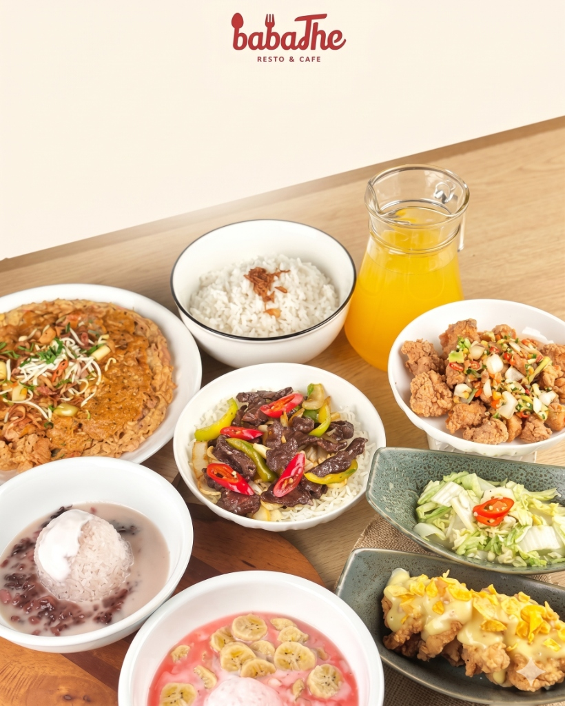
Babathe Makassar merupakan salah satu destinasi kuliner yang menawarkan pengalaman bersantap yang unik dengan menggabungkan konsep makanan yang sehat, lezat, dan berkualitas. Restoran ini dikenal karena suasananya yang nyaman dan hangat, sehingga cocok untuk berbagai kegiatan, mulai dari makan bersama keluarga, berkumpul dengan teman, hingga pertemuan kerja yang santai. Desain interior yang rapi dan lingkungan yang bersih semakin menambah kenyamanan pengunjung selama menikmati hidangan.
Salah satu daya tarik utama Babathe adalah pilihan menu yang beragam, termasuk gelato yang menjadi favorit banyak pelanggan karena cita rasanya yang nikmat dan teksturnya yang lembut. Selain itu, pelayanan yang ramah dan responsif membuat pengunjung merasa dihargai dan mendapatkan pengalaman makan yang menyenangkan. Harga yang ditawarkan juga tergolong terjangkau jika dibandingkan dengan kualitas makanan dan fasilitas yang tersedia.
Keunggulan lain dari Babathe X Luce Toddopuli Resto and Gelato adalah pemanfaatan teknologi dalam proses pemesanan. Pengunjung dapat melihat dan menjelajahi menu secara lebih praktis melalui perangkat tablet yang tersedia, sehingga mereka dapat memilih makanan dan minuman dengan lebih mudah tanpa terburu-buru. Inovasi ini tidak hanya meningkatkan kenyamanan pelanggan, tetapi juga memberikan pengalaman bersantap yang lebih modern dan interaktif.
Dengan kombinasi makanan berkualitas, suasana yang nyaman, pelayanan yang baik, serta penggunaan teknologi yang inovatif, Babathe menjadi salah satu pilihan kuliner yang menarik di Kota Makassar.
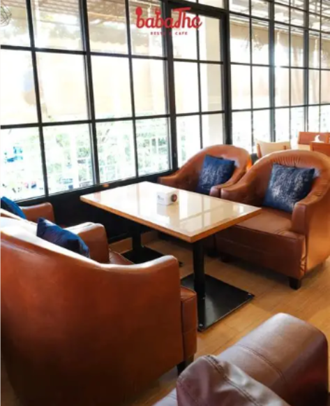
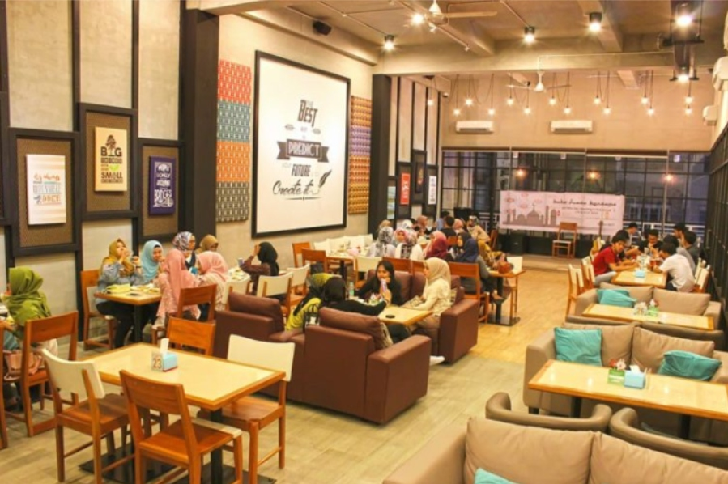
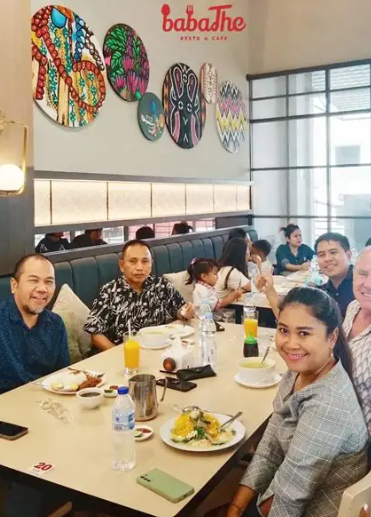
~ Dona Natasya Mangosa
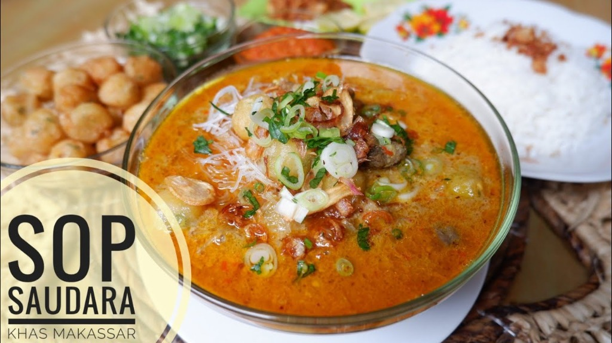
Di tengah maraknya kuliner modern yang terus bermunculan di Kota Makassar, ada satu warung sederhana yang tetap bertahan dan justru semakin dicintai banyak orang: Sop Saudara Assauna. Bagi warga lokal, nama ini bukan sekadar tempat makan, melainkan bagian dari cerita keseharian masyarakat Makassar. Dari mahasiswa, pekerja kantoran, hingga sopir ojek online, hampir semua pernah merasakan hangatnya semangkuk sop saudara di tempat ini.
Aroma rempah yang khas langsung menyambut sejak pertama kali memasuki warung makan tersebut. Kuah hitam kecokelatan yang gurih berpadu dengan potongan daging sapi, bihun, dan perkedel menjadi ciri utama kuliner legendaris khas Sulawesi Selatan ini. Disajikan bersama ikan bakar dan nasi hangat, Sop Saudara Assauna menghadirkan rasa sederhana yang sulit dilupakan.
Di tengah harga makanan yang semakin meningkat, Sop Saudara Assauna justru tetap dikenal sebagai kuliner "penyelamat akhir bulan" bagi para pelajar dan mahasiswa. Dengan harga yang relatif murah dan porsi yang mengenyangkan, tempat ini menjadi pilihan favorit banyak anak muda di Makassar. Kesederhanaan tempatnya tidak mengurangi antusias pengunjung — kursi dan meja yang selalu terisi menjadi bukti bahwa rasa dan kualitas masih menjadi alasan utama orang datang kembali.
Bahkan, banyak pelanggan mengaku sudah makan di tempat ini sejak masih kecil karena diajak oleh orang tua mereka. Kini, mereka kembali datang bersama teman atau keluarga, menjadikan Sop Saudara Assauna sebagai kuliner lintas generasi. Kehadiran tempat ini menjadi bukti bahwa kuliner legendaris tidak harus mahal untuk tetap dicintai.
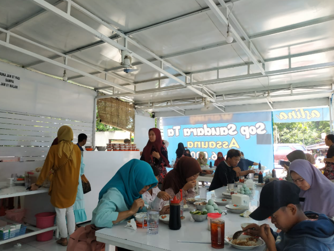
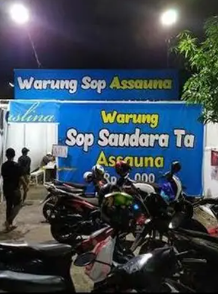
~ Alya Safitri
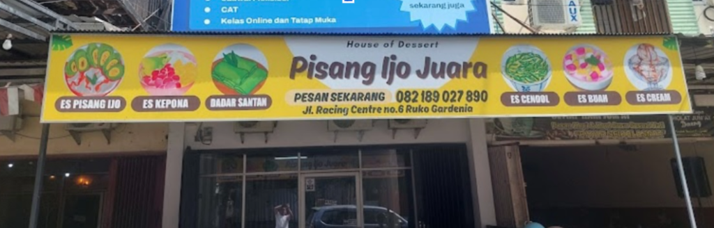
Pisang Ijo Juara merupakan salah satu destinasi kuliner khas Makassar yang menawarkan pengalaman menikmati pencuci mulut tradisional dengan konsep yang modern, lezat, dan berkualitas. Kedai ini dikenal karena menggunakan ekstrak daun pandan asli untuk menjaga cita rasa otentik, sehingga sangat cocok untuk dinikmati bersama keluarga, berkumpul dengan teman, hingga menjadi pilihan takjil yang menyegarkan.
Salah satu daya tarik utama Pisang Ijo Juara adalah pilihan menunya yang beragam dan inovatif, tidak hanya terbatas pada pisang ijo klasik tetapi juga varian menu dessert segar lainnya. Selain itu, jaminan sertifikasi halal dan kemudahan akses pemesanan membuat pelanggan merasa aman dan nyaman. Harga yang ditawarkan juga tergolong sangat terjangkau dan sering menghadirkan promo menarik, menjadikannya pilihan yang sangat ramah di kantong dengan kualitas rasa yang premium.
Keunggulan lain dari Pisang Ijo Juara adalah kemudahan dalam proses pemesanan dan layanan pelanggan yang adaptif. Pengunjung dapat memilih untuk menikmati hidangan langsung di tempat (dine-in) atau memesan secara praktis dari rumah melalui perangkat smartphone via GrabFood dan GoFood.
Melalui kombinasi rasa tradisional yang otentik, harga bersahabat, serta kemudahan akses pemesanan, Pisang Ijo Juara sukses menjadi salah satu pilihan kuliner hits yang wajib dicoba di Makassar.
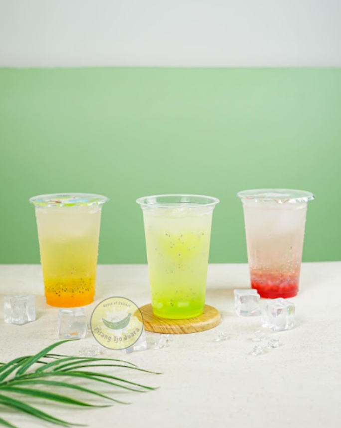
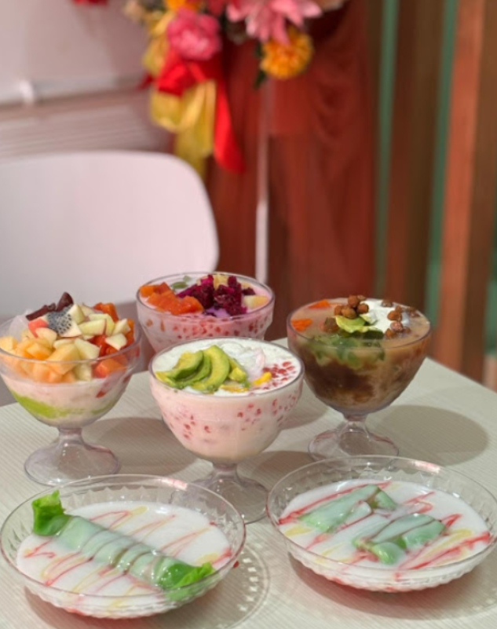
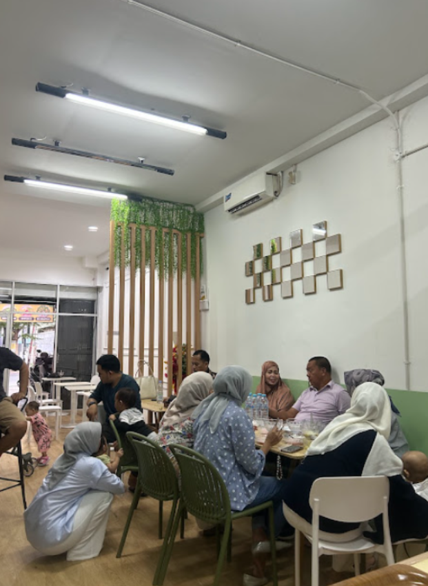
~ Alifa Putri Zaldy
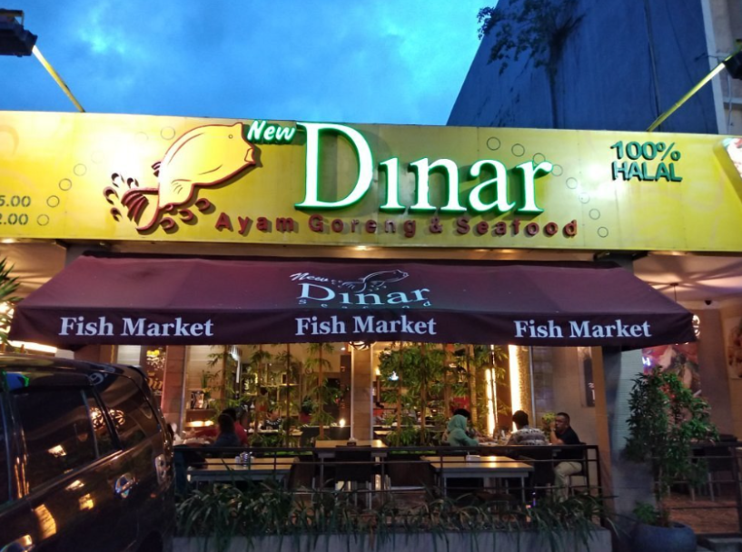
RM. Dinar Seafood merupakan salah satu destinasi kuliner seafood di Kota Makassar yang menawarkan konsep restoran keluarga dengan nuansa modern dan nyaman. Restoran ini memiliki area indoor yang luas dan sejuk sehingga cocok dijadikan tempat makan bersama keluarga, teman, maupun untuk acara tertentu. Suasana restoran yang tertata rapi dan nyaman membuat pengunjung dapat menikmati hidangan dengan lebih santai dan menyenangkan.
Salah satu daya tarik utama RM. Dinar Seafood adalah pilihan seafood yang dapat dipilih sendiri oleh pelanggan sesuai selera. Berbagai jenis seafood yang tersedia dikenal segar dan diolah dengan bumbu khas yang lezat. Menu andalan seperti ikan bakar katamba dengan bumbu parape serta buncis telur asin menjadi favorit banyak pengunjung karena cita rasanya yang khas dan menggugah selera.
Pelayanan di RM. Dinar Seafood juga dikenal ramah dan cepat sehingga memberikan kenyamanan bagi setiap pengunjung. Restoran ini turut dilengkapi dengan beberapa fasilitas pendukung seperti mushola dan VIP room yang dapat digunakan untuk acara keluarga maupun pertemuan tertentu.
Dengan kombinasi suasana yang nyaman, seafood segar, cita rasa makanan yang lezat, serta fasilitas yang memadai, RM. Dinar Seafood menjadi salah satu pilihan tempat makan seafood yang menarik dan cocok untuk berbagai kalangan, khususnya keluarga di Kota Makassar.
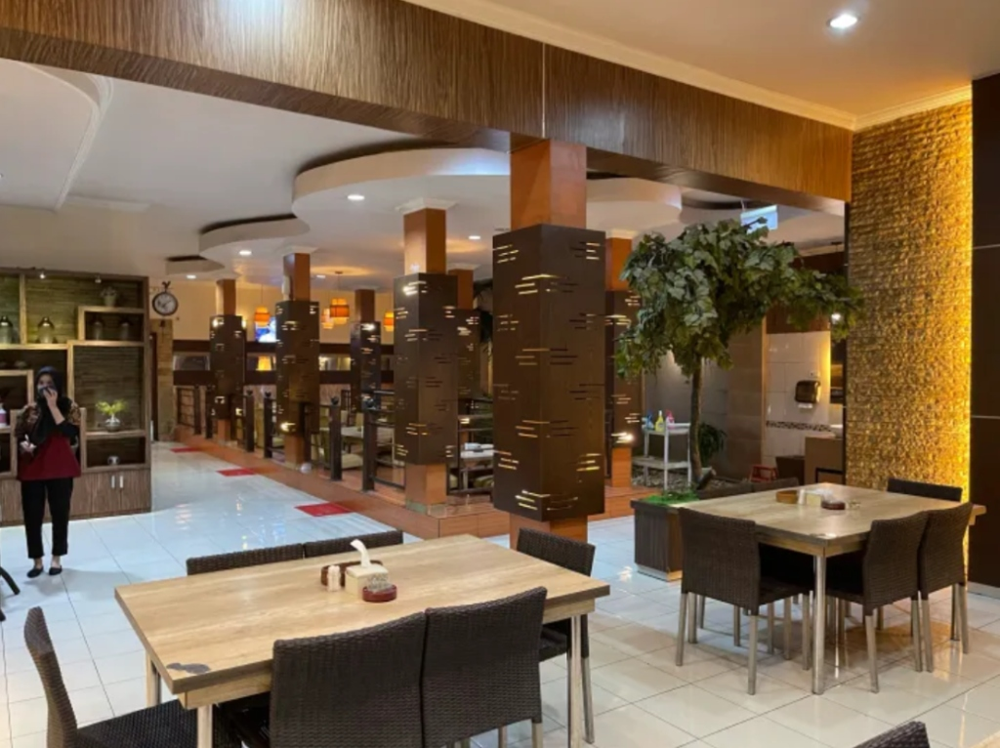
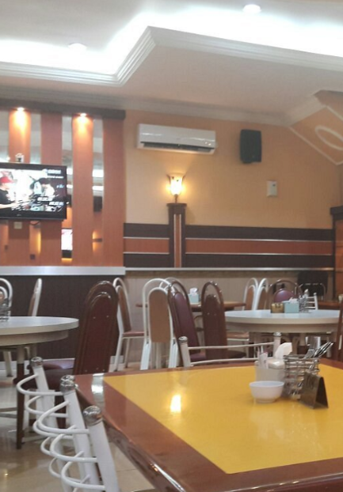
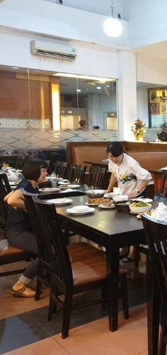
~ Puji Lestari Legsani Wati
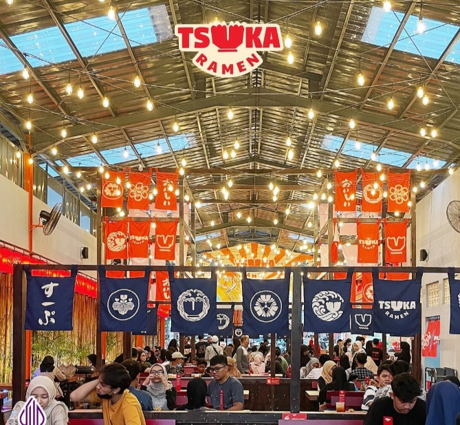
Tsuka Ramen & Bento Ratulangi Makassar by Legit Group merupakan salah satu restoran ramen Jepang modern yang cukup populer di Makassar, terutama di kalangan anak muda dan pecinta kuliner Jepang. Tempat ini mengusung konsep Japanese casual dining dengan suasana yang estetik, nyaman, dan cocok dijadikan tempat nongkrong maupun membuat konten media sosial. Interiornya dibuat modern dengan nuansa Jepang kekinian sehingga memberikan pengalaman makan yang lebih menarik dibanding warung ramen biasa.
Salah satu alasan tempat ini ramai adalah karena mereka menawarkan ramen halal dengan harga yang relatif terjangkau. Menu yang paling sering dicari biasanya Original Tsuka Ramen, Miso Ramen, Volcano Ramen, dan Red Ninja Ramen yang memiliki cita rasa gurih dan creamy dengan pilihan tingkat kepedasan tertentu. Selain ramen, tersedia juga side dish seperti chicken karaage, gyoza, egg tempura, dan berbagai minuman ala Japanese café.
Berbeda dengan ramen autentik Jepang yang sering fokus pada kaldu berat dan rasa umami yang lebih kompleks, Tsuka Ramen lebih menyesuaikan rasa dengan lidah Indonesia. Kuahnya dibuat lebih creamy, lebih kuat bumbunya, dan lebih cocok untuk pengunjung yang suka makanan gurih dan pedas. Strategi seperti ini memang membuat restoran lebih mudah diterima pasar Indonesia, terutama mahasiswa dan anak muda.
Yang cukup menarik, Tsuka Ramen juga sudah mengusung konsep halal dan modern branding sehingga berbeda dengan ramen Jepang tradisional yang banyak menggunakan pork broth. Karena itu, restoran ini lebih mudah menjangkau pasar Muslim di Indonesia.
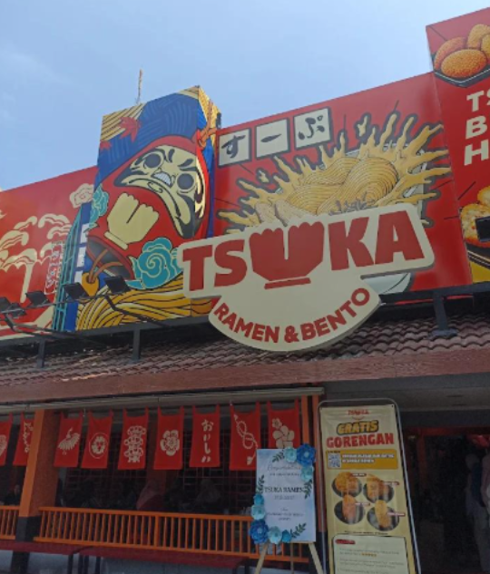
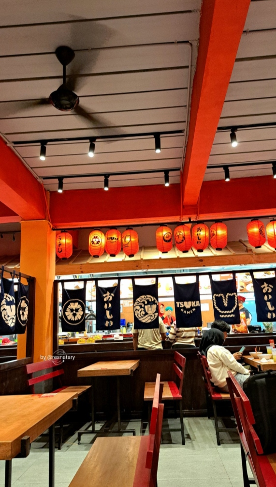
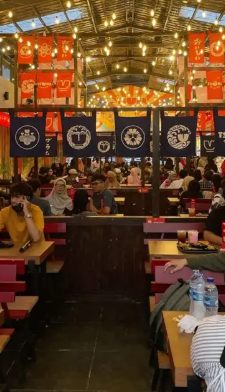